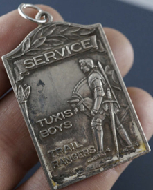
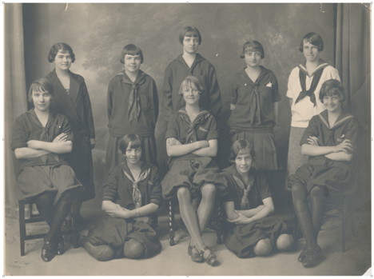
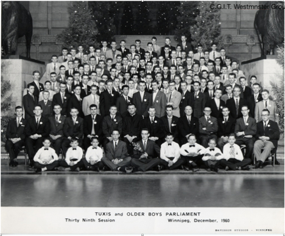
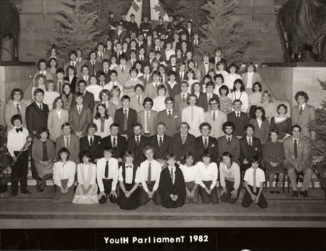

-1-MasterItem.svg)
Stories of Westminster United Church & its People / Page
52
The Y’s Four Fold Program, Physical, Mental, Spiritual and
Social well being and added some aspects of the Boy scouts
program. Finally, under Statten’s C.S.E.T. program, TUXIS
was established for boys aged 15 to 17. A similar program,
Trail Rangers, was developed for boys aged 12 to 14. A
parallel program was established for girls, CGIT-Canadian
Girls in Training. (The girls’ four-fold descriptors were
‘Cherish Health, Seek Truth, Know God, Serve Others.’) These programs included midweek activities
of Sunday school classes, outdoor activities and CGIT. Westminster Group
community service.
Camping was a significant activity component of the program.
Westminster’s Sunday School adopted these programs to widen its emphasis on spiritual issues
as part of a young person’s whole life. In 1925 The United Church of Canada and a number of
other Protestant Christian denominations adopted the program. (Here is an
excellent article
by Patricia Dirks
on why Canadian Protestant Churches felt the need to provide young men
and women with a training program that placed spirituality as one of four
important
developmental values.)
Out of the program Tuxis Boys Parliament
events were held during Christmas vacations
in a number of provinces. As the Tuxis
program declined these Boys Parliaments
morphed into Youth Parliaments in which
both boys and girls participated.
While Tuxis and CGIT flourished during
Christie’s ministry and well into the 1930s,
in the 1940s and after WW 2 the Tuxis program declined and was essentially dead
by the 1970s.
CGIT, on the other hand has flourished much longer. As have the Scouting and
Girl Guides programs.
Table
of Contents




Scope of Sunday school activity